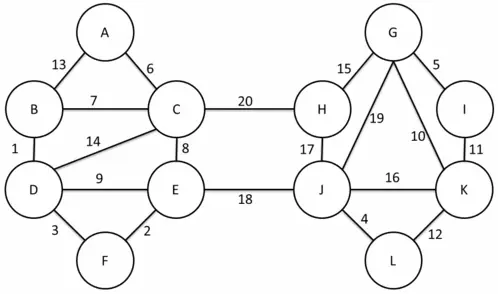
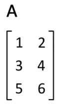

万年不更了，随便写点什么吧。
首先最小生成树的两种求法 Kruskal 和 Prim，强行丢 链接 。
其他还有一个 Borůvka 算法，大概思路就是每次将每个集合伸出去的最短的那条边选入，选入后将两个集合合并成一个新的集合，考虑到每次集合个数减半，所以复杂度 O ( m log n ) \mathcal{O}(m\log n) O ( m log n )

那这东西有什么用呢？有 这么一道题 ，大概是有一个 n ( n ≤ 200000 ) n\,(n\le 200000) n ( n ≤ 2 0 0 0 0 0 ) a i ( 0 ≤ a i < 2 30 ) a_i\,(0\le a_i<2^{30}) a i ( 0 ≤ a i < 2 3 0 ) i i i j j j a i ⨂ a j a_i\bigotimes a_j a i ⨂ a j ⨂ \bigotimes ⨂
这道题大概用到了 Borůvka 的思想，先用所有点权建一棵 Trie 树，考虑 Trie 树上一棵子树，显然一开始肯定是他们自己连成一棵 MST，然后再和其兄弟连一条边，因为跨越子树像兄弟连一条边需要 2 d 2^d 2 d d d d dfs）下去即可。
具体代码可以 戳这里 。
有一道叫 最小 mex 生成树 的题目，题目大意是给定 n n n m m m m e x \mathrm{mex} m e x 1 ≤ n ≤ 1 0 6 , 1 ≤ m ≤ 1 0 5 , 0 ≤ w ≤ 1 0 5 1\le n\le 10^6,\,1\le m\le 10^5,\,0\le w\le 10^5 1 ≤ n ≤ 1 0 6 , 1 ≤ m ≤ 1 0 5 , 0 ≤ w ≤ 1 0 5
考虑一个做法：枚举答案 x x x x x x
建一棵以边权为下标的线段树，对于每条边权为 w w w [ 0 , w − 1 ] [0,w-1] [ 0 , w − 1 ] [ w + 1 , 1 0 5 ] [w+1,10^5] [ w + 1 , 1 0 5 ]
用可撤销按秩合并并查集，复杂度 O ( n log 2 n ) \mathcal{O}(n\log^2n) O ( n log 2 n ) log \log log 1 0 6 10^6 1 0 6
最小比率生成树，也就是给你一张图，每条边有一个非负权值 a i , b i a_i,b_i a i , b i T T T ∑ e ∈ T a e ∑ e ∈ T b e \frac{\sum_{e\in T}a_e}{\sum_{e\in T}b_e} ∑ e ∈ T b e ∑ e ∈ T a e
大概就是一个 01 分数规划问题，我们可以考虑二分答案 l l l ∑ e ∈ T a e ∑ e ∈ T b e ≤ l \frac{\sum_{e\in T}a_e}{\sum_{e\in T}b_e}\le l ∑ e ∈ T b e ∑ e ∈ T a e ≤ l ∑ e ∈ T a e − l ⋅ b e ≤ 0 \sum_{e\in T}a_e-l\cdot b_e\le 0 ∑ e ∈ T a e − l ⋅ b e ≤ 0
考虑到 a i ≥ 0 , b i ≥ 0 a_i\ge 0,b_i\ge 0 a i ≥ 0 , b i ≥ 0 l l l
以 a i − l ⋅ b i a_i-l\cdot b_i a i − l ⋅ b i
模板题大概是 这道 ，代码可以 戳这里 。
接下来是那到经典的 wqs 二分好题 ，题目大意就是给你一个无向带权连通图，每条边是黑色或白色。让你求一棵最小权的恰好有 x x x V ≤ 50000 , E ≤ 100000 V\le 50000,\,E\le 100000 V ≤ 5 0 0 0 0 , E ≤ 1 0 0 0 0 0 [ 1 , 100 ] [1,100] [ 1 , 1 0 0 ]
首先我们先要知道 wqs 二分是什么，那就先说一道题吧，大概就是有一个长度为 n ( n ≤ 1 0 5 ) n\,(n\le 10^5) n ( n ≤ 1 0 5 ) { a } \{a\} { a } K K K i i i s i s_i s i ∑ i = 1 K s i 2 \sum_{i=1}^Ks_i^2 ∑ i = 1 K s i 2
我们令 f k f_k f k k k k f k f_k f k ( a + b ) 2 > a 2 + b 2 \left(a+b\right)^2> a^2+b^2 ( a + b ) 2 > a 2 + b 2
我们来考虑 f f f f f f k k k k − 1 k-1 k − 1 1 1 1 f k + 1 − f k f_{k+1}-f_k f k + 1 − f k k + 1 → k k+1\to k k + 1 → k k + 1 → k k+1\to k k + 1 → k a ⋅ ( b + c ) ≥ a b a\cdot(b+c)\ge ab a ⋅ ( b + c ) ≥ a b 0101010 变成 1010101。如果 k + 1 → k k+1\to k k + 1 → k k + 1 → k k+1\to k k + 1 → k k → k − 1 k\to k-1 k → k − 1 k + 1 → k k+1\to k k + 1 → k k → k − 1 k\to k-1 k → k − 1 k + 1 → k k+1\to k k + 1 → k k → k − 1 k\to k-1 k → k − 1 f k + 1 − f k f_{k+1}-f_k f k + 1 − f k f k + 1 − f k f_{k+1}-f_k f k + 1 − f k f f f
那我们既然我们得到了一个凸壳，但是我们并不知道凸壳上具体点的纵坐标，我们考虑一个做法：考虑用一条直线 y = k x + b y=kx+b y = k x + b k k k b b b
对于这道题，我们发现二分的 k k k s i 2 s_i^2 s i 2 s i 2 − k s_i^2-k s i 2 − k k k k K K K b b b
这个东西我们可以考虑一个朴素的 dp，令 g i g_i g i i i i
g i = min j = 1 i − 1 ( g j + ( ∑ t = j i a t ) 2 ) − k g_i=\min_{j=1}^{i-1}\left(g_j+\left(\sum_{t=j}^ia_t\right)^2\right)-k g i = j = 1 min i − 1 ⎝ ⎛ g j + ( t = j ∑ i a t ) 2 ⎠ ⎞ − k
我们令 S i = ∑ j = 1 i a j S_i=\sum_{j=1}^ia_j S i = ∑ j = 1 i a j
g i = min j = 1 i − 1 ( g j + s j 2 − 2 s i s j ) − k − s i 2 g_i=\min_{j=1}^{i-1}\left(g_j+s_j^2-2s_is_j\right)-k-s_i^2 g i = j = 1 min i − 1 ( g j + s j 2 − 2 s i s j ) − k − s i 2
不难发现这个东西可以斜率优化，于是我们就可以顺利地解决这道题。
我们回过头来看之前那道题：给你一个无向带权连通图，每条边是黑色或白色。让你求一棵最小权的恰好有 x x x
这道题的答案似乎并不是随 x x x a a a b b b c c c d d d O ( E ) \mathcal{O}(E) O ( E ) O ( E log C α ( V ) ) \mathcal{O}(E\log C\,\alpha(V)) O ( E log C α ( V ) ) C C C
接着应该是 严格次小生成树 ，题目就是让你求一棵严格次小生成树吧。其实也很简单，首先发现任意一棵最小生成树都可以通过加一条边再删一条边变成一棵严格次小生成树，于是就可以建出一棵最小生成树，用倍增、树剖或是 LCT 维护链最大值，每次枚举一条非树边尝试删除一条树边，复杂度 O ( n log 2 n ) / O ( n log n ) \mathcal{O}(n\log^2n)/\mathcal{O}(n\log n) O ( n log 2 n ) / O ( n log n ) 这里 。
最小权值生成树？就是要求 ∑ w i s i \sum w_is_i ∑ w i s i w i w_i w i i i i 1 1 1 w 1 = 0 w_1=0 w 1 = 0 s i s_i s i 1 1 1 i i i 1 ≤ n , m ≤ 1 0 5 , w i ≥ 0 1\le n,m\le 10^5,\,w_i\ge 0 1 ≤ n , m ≤ 1 0 5 , w i ≥ 0
发现 ∑ w i s i = ∑ d i \sum w_is_i=\sum d_i ∑ w i s i = ∑ d i d i d_i d i i i i 1 1 1
最小极差生成树？首先有一个 O ( m 2 ) \mathcal{O}(m^2) O ( m 2 ) Kruskal。
然后我们发现我们可以倒着枚举边，每次加入一个最小的，形成一个环，显然是删去环中最大的，这个我们可以直接用 LCT 维护，维护边权的时候将边变成一个虚点即可。时间复杂度 O ( m log ( n + m ) ) \mathcal{O}(m\log (n+m)) O ( m log ( n + m ) )
模板题可以看 这道 ，代码可以看 这里 。有一个大坑就是这道题有自环。
还有最小乘积生成树。就是每条边有两个权值 a i , b i a_i,b_i a i , b i T T T ∑ e ∈ T a e × ∑ e ∈ T b e \sum_{e\in T}a_e\times\sum_{e\in T}b_e ∑ e ∈ T a e × ∑ e ∈ T b e 1 ≤ n ≤ 200 , 1 ≤ m ≤ 10000 , 0 ≤ a i ≤ b i ≤ 255 1\le n\le 200,\,1\le m\le 10000,\,0\le a_i\le b_i\le 255 1 ≤ n ≤ 2 0 0 , 1 ≤ m ≤ 1 0 0 0 0 , 0 ≤ a i ≤ b i ≤ 2 5 5
考虑将每棵最小生成树 T T T ( ∑ e ∈ T a e , ∑ e ∈ T b e ) \left(\sum_{e\in T} a_e,\sum_{e\in T} b_e\right) ( ∑ e ∈ T a e , ∑ e ∈ T b e ) ( 0 , 0 ) (0,0) ( 0 , 0 )
然后就不难发现答案一定在凸壳上，我们考虑找到这个凸壳。
有一种叫做 Quick-Hull 的找凸包的方法，就是选取两个凸包上的点，连成一条线，找到距离这条线最远的点（一侧），然后分治下去（继续偷一张 Wikipedia 上的图）：
这种方法可以用在这道题目上，我们考虑先找到两个点，最好找的就是左上角和右下角了，一个是以 a a a b b b
然后我们考虑找最远的点，那显然就是面积最大的点，也就是说，如果我们找到左上角的点 A ( x a , y a ) A(x_a,y_a) A ( x a , y a ) B ( x b , y b ) B(x_b,y_b) B ( x b , y b ) C ( x c , y c ) C(x_c,y_c) C ( x c , y c ) A C → × A B → \overrightarrow{AC}\times \overrightarrow{AB} A C × A B
我们考虑到：
A C → × A B → = ( x c − x a , y c − y a ) × ( x b − x a , y b − y a ) = ( x c − x a ) ⋅ ( y b − y a ) − ( x b − x a ) ⋅ ( y c − y a ) = x c y b − x c y a − x a y b + x a y a − x b y c + x a y c + x b y a − x a y a = x c ( y b − y a ) + y c ( x a − x b ) + x b y a − x a y b \begin{aligned} \overrightarrow{AC}\times \overrightarrow{AB}&=\left(x_c-x_a,y_c-y_a\right)\times\left(x_b-x_a,y_b-y_a\right)\\ &=(x_c-x_a)\cdot(y_b-y_a)-(x_b-x_a)\cdot(y_c-y_a)\\ &=x_cy_b-x_cy_a-x_ay_b+x_ay_a-x_by_c+x_ay_c+x_by_a-x_ay_a\\ &=x_c(y_b-y_a)+y_c(x_a-x_b)+x_by_a-x_ay_b \end{aligned} A C × A B = ( x c − x a , y c − y a ) × ( x b − x a , y b − y a ) = ( x c − x a ) ⋅ ( y b − y a ) − ( x b − x a ) ⋅ ( y c − y a ) = x c y b − x c y a − x a y b + x a y a − x b y c + x a y c + x b y a − x a y a = x c ( y b − y a ) + y c ( x a − x b ) + x b y a − x a y b
考虑到 x b y a − x a y b x_by_a-x_ay_b x b y a − x a y b x c ( y b − y a ) + y c ( x a − x b ) x_c(y_b-y_a)+y_c(x_a-x_b) x c ( y b − y a ) + y c ( x a − x b ) x c ( y a − y b ) + y c ( x b − x a ) x_c(y_a-y_b)+y_c(x_b-x_a) x c ( y a − y b ) + y c ( x b − x a )
于是我们只要将边权定为 a c ( y a − y b ) + b c ( x b − x a ) a_c(y_a-y_b)+b_c(x_b-x_a) a c ( y a − y b ) + b c ( x b − x a )
复杂度？大概口胡一下：决策点应该是有 O ( n n − 2 ) \mathcal{O}\left(n^{n-2}\right) O ( n n − 2 ) 实测 了一下感觉像是 O ( log n ) \mathcal{O}(\log n) O ( log n ) 知乎 上看到了一篇奇怪的证明，说确实是 O ( log n ) \mathcal{O}(\log n) O ( log n ) 论文 ，并不是很懂里面的内容，有兴趣的可以看一下。于是凸包上的期望点数应该是 O ( log ( n n − 2 ) ) = O ( n log n ) \mathcal{O}\left(\log \left(n^{n-2}\right)\right)=\mathcal{O}(n\log n) O ( log ( n n − 2 ) ) = O ( n log n ) O ( m log m ) \mathcal{O}(m\log m) O ( m log m ) O ( n m log n log m ) \mathcal{O}(nm\log n\log m) O ( n m log n log m )
模板题在 这里 ，代码在 这里 。
关于这个问题的复杂度在知乎上翻到了一个奇怪的讨论，大家可以 去看看 。
然后是 Matrix-Tree 定理。关于这部分内容的很多东西均偷自 这篇论文 。
在此之前先需要介绍一下行列式是什么，首先我们来先介绍一下置换。关于置换，记为
( 1 2 ⋯ n a 1 a 2 ⋯ a n ) \begin{pmatrix} 1 & 2 & \cdots & n\\ a_1 & a_2 & \cdots & a_n \end{pmatrix} ( 1 a 1 2 a 2 ⋯ ⋯ n a n )
其中 a a a 1 ∼ n 1\sim n 1 ∼ n
显然对于任意一个排列，要将其排序的话，其交换次数的奇偶性与交换方式无关，我们令最小交换次数为 t t t
δ ( 1 2 ⋯ n a 1 a 2 ⋯ a n ) = ( − 1 ) t \delta\begin{pmatrix} 1 & 2 & \cdots & n\\ a_1 & a_2 & \cdots & a_n \end{pmatrix}=(-1)^t δ ( 1 a 1 2 a 2 ⋯ ⋯ n a n ) = ( − 1 ) t
然后是行列式，其实说白了他是一个函数，将一个 n × n n\times n n × n det A \det A det A ∣ A ∣ \left|A\right| ∣ A ∣
det A = ∑ ( 1 2 ⋯ n i 1 i 2 ⋯ i n ) δ ( 1 2 ⋯ n i 1 i 2 ⋯ i n ) ∏ j = 1 n a j , i j \det A=\sum_{\begin{pmatrix} 1 & 2 & \cdots & n\\ i_1 & i_2 & \cdots & i_n \end{pmatrix}}\delta\begin{pmatrix} 1 & 2 & \cdots & n\\ i_1 & i_2 & \cdots & i_n \end{pmatrix}\prod_{j=1}^na_{j,i_j} det A = ( 1 i 1 2 i 2 ⋯ ⋯ n i n ) ∑ δ ( 1 i 1 2 i 2 ⋯ ⋯ n i n ) j = 1 ∏ n a j , i j
观察上式，我们可以得到一些性质，考虑到这些性质都可以直接由定义得到，证明就不再一一展开。
首先，我们有：
det A T = det A \det A^{\mathrm{T}}=\det A det A T = det A
A T A^{\mathrm{T}} A T A A A

这暗示着我们，行列式中行和列是等价的，下面在讨论行的问题时，列都是一样的。
然后是如果将行列式中的两行互换，那么行列式变号。于是我们有一个推论，那就是如果矩阵 A A A A A A det A = − det A \det A=-\det A det A = − det A det A = 0 \det A=0 det A = 0
在行列式中，某一行的每个元素是两数之和，则此行列式可拆分为两个相加的行列式。
∣ a 11 a 12 … a 1 n ⋮ ⋮ … ⋮ a i 1 + b i 1 a i 2 + b i 2 … a i n + b i n ⋮ ⋮ ⋱ ⋮ a n 1 a n 2 … a n n ∣ = ∣ a 11 a 12 … a 1 n ⋮ ⋮ … ⋮ a i 1 a i 2 … a i n ⋮ ⋮ ⋱ ⋮ a n 1 a n 2 … a n n ∣ + ∣ a 11 a 12 … a 1 n ⋮ ⋮ … ⋮ b i 1 b i 2 … b i n ⋮ ⋮ ⋱ ⋮ a n 1 a n 2 … a n n ∣ {\begin{vmatrix}a_{11}&a_{12}&\dots &a_{1n}\\\vdots &\vdots &\dots &\vdots \\{\color {blue}a_{i1}}+{\color {green}b_{i1}}&{\color {blue}a_{i2}}+{\color {green}b_{i2}}&\dots &{\color {blue}a_{in}}+{\color {green}b_{in}}\\\vdots &\vdots &\ddots &\vdots \\a_{n1}&a_{n2}&\dots &a_{nn}\end{vmatrix}}={\begin{vmatrix}a_{11}&a_{12}&\dots &a_{1n}\\\vdots &\vdots &\dots &\vdots \\{\color {blue}a_{i1}}&{\color {blue}a_{i2}}&\dots &{\color {blue}a_{in}}\\\vdots &\vdots &\ddots &\vdots \\a_{n1}&a_{n2}&\dots &a_{nn}\end{vmatrix}}+{\begin{vmatrix}a_{11}&a_{12}&\dots &a_{1n}\\\vdots &\vdots &\dots &\vdots \\{\color {green}b_{i1}}&{\color {green}b_{i2}}&\dots &{\color {green}b_{in}}\\\vdots &\vdots &\ddots &\vdots \\a_{n1}&a_{n2}&\dots &a_{nn}\end{vmatrix}} ∣ ∣ ∣ ∣ ∣ ∣ ∣ ∣ ∣ ∣ ∣ ∣ ∣ a 1 1 ⋮ a i 1 + b i 1 ⋮ a n 1 a 1 2 ⋮ a i 2 + b i 2 ⋮ a n 2 … … … ⋱ … a 1 n ⋮ a i n + b i n ⋮ a n n ∣ ∣ ∣ ∣ ∣ ∣ ∣ ∣ ∣ ∣ ∣ ∣ ∣ = ∣ ∣ ∣ ∣ ∣ ∣ ∣ ∣ ∣ ∣ ∣ ∣ ∣ a 1 1 ⋮ a i 1 ⋮ a n 1 a 1 2 ⋮ a i 2 ⋮ a n 2 … … … ⋱ … a 1 n ⋮ a i n ⋮ a n n ∣ ∣ ∣ ∣ ∣ ∣ ∣ ∣ ∣ ∣ ∣ ∣ ∣ + ∣ ∣ ∣ ∣ ∣ ∣ ∣ ∣ ∣ ∣ ∣ ∣ ∣ a 1 1 ⋮ b i 1 ⋮ a n 1 a 1 2 ⋮ b i 2 ⋮ a n 2 … … … ⋱ … a 1 n ⋮ b i n ⋮ a n n ∣ ∣ ∣ ∣ ∣ ∣ ∣ ∣ ∣ ∣ ∣ ∣ ∣
根据上面一条，我们可以得到，如果将矩阵的一行或是一列都乘以一个数 λ \lambda λ λ \lambda λ 0 0 0
∣ a 11 a 12 … a 1 n ⋮ ⋮ … ⋮ k a i 1 k a i 2 … k a i n ⋮ ⋮ ⋱ ⋮ a n 1 a n 2 … a n n ∣ = k ∣ a 11 a 12 … a 1 n ⋮ ⋮ … ⋮ a i 1 a i 2 … a i n ⋮ ⋮ ⋱ ⋮ a n 1 a n 2 … a n n ∣ {\begin{vmatrix}a_{11}&a_{12}&\dots &a_{1n}\\\vdots &\vdots &\dots &\vdots \\{\color {blue}k}a_{i1}&{\color {blue}k}a_{i2}&\dots &{\color {blue}k}a_{in}\\\vdots &\vdots &\ddots &\vdots \\a_{n1}&a_{n2}&\dots &a_{nn}\end{vmatrix}}={\color {blue}k}{\begin{vmatrix}a_{11}&a_{12}&\dots &a_{1n}\\\vdots &\vdots &\dots &\vdots \\a_{i1}&a_{i2}&\dots &a_{in}\\\vdots &\vdots &\ddots &\vdots \\a_{n1}&a_{n2}&\dots &a_{nn}\end{vmatrix}} ∣ ∣ ∣ ∣ ∣ ∣ ∣ ∣ ∣ ∣ ∣ ∣ ∣ a 1 1 ⋮ k a i 1 ⋮ a n 1 a 1 2 ⋮ k a i 2 ⋮ a n 2 … … … ⋱ … a 1 n ⋮ k a i n ⋮ a n n ∣ ∣ ∣ ∣ ∣ ∣ ∣ ∣ ∣ ∣ ∣ ∣ ∣ = k ∣ ∣ ∣ ∣ ∣ ∣ ∣ ∣ ∣ ∣ ∣ ∣ ∣ a 1 1 ⋮ a i 1 ⋮ a n 1 a 1 2 ⋮ a i 2 ⋮ a n 2 … … … ⋱ … a 1 n ⋮ a i n ⋮ a n n ∣ ∣ ∣ ∣ ∣ ∣ ∣ ∣ ∣ ∣ ∣ ∣ ∣
根据上面的东西，我们就可以发现：
∣ ⋮ ⋮ ⋮ ⋮ a i 1 a i 2 … a i n a j 1 a j 2 … a j n ⋮ ⋮ ⋮ ⋮ ∣ = ∣ ⋮ ⋮ ⋮ ⋮ a i 1 a i 2 … a i n a j 1 a j 2 … a j n ⋮ ⋮ ⋮ ⋮ ∣ + ∣ ⋮ ⋮ ⋮ ⋮ a i 1 a i 2 … a i n k a i 1 k a i 2 … k a i n ⋮ ⋮ ⋮ ⋮ ∣ = ∣ ⋮ ⋮ ⋮ ⋮ a i 1 a i 2 … a i n a j 1 + k a i 1 a j 2 + k a i 2 … a j n + k a i n ⋮ ⋮ ⋮ ⋮ ∣ \begin{aligned} {\begin{vmatrix}\vdots &\vdots &\vdots &\vdots \\a_{i1}&a_{i2}&\dots &a_{in}\\a_{j1}&a_{j2}&\dots &a_{jn}\\\vdots &\vdots &\vdots &\vdots \\\end{vmatrix}}&={\begin{vmatrix}\vdots &\vdots &\vdots &\vdots \\a_{i1}&a_{i2}&\dots &a_{in}\\a_{j1}&a_{j2}&\dots &a_{jn}\\\vdots &\vdots &\vdots &\vdots \\\end{vmatrix}}+{\begin{vmatrix}\vdots &\vdots &\vdots &\vdots \\a_{i1}&a_{i2}&\dots &a_{in}\\{\color {blue}ka_{i1}}&{\color {blue}ka_{i2}}&\dots &{\color {blue}ka_{in}}\\\vdots &\vdots &\vdots &\vdots \\\end{vmatrix}}\\&={\begin{vmatrix}\vdots &\vdots &\vdots &\vdots \\a_{i1}&a_{i2}&\dots &a_{in}\\a_{j1}{\color {blue}+ka_{i1}}&a_{j2}{\color {blue}+ka_{i2}}&\dots &a_{jn}{\color {blue}+ka_{in}}\\\vdots &\vdots &\vdots &\vdots \\\end{vmatrix}} \end{aligned} ∣ ∣ ∣ ∣ ∣ ∣ ∣ ∣ ∣ ∣ ∣ ⋮ a i 1 a j 1 ⋮ ⋮ a i 2 a j 2 ⋮ ⋮ … … ⋮ ⋮ a i n a j n ⋮ ∣ ∣ ∣ ∣ ∣ ∣ ∣ ∣ ∣ ∣ ∣ = ∣ ∣ ∣ ∣ ∣ ∣ ∣ ∣ ∣ ∣ ∣ ⋮ a i 1 a j 1 ⋮ ⋮ a i 2 a j 2 ⋮ ⋮ … … ⋮ ⋮ a i n a j n ⋮ ∣ ∣ ∣ ∣ ∣ ∣ ∣ ∣ ∣ ∣ ∣ + ∣ ∣ ∣ ∣ ∣ ∣ ∣ ∣ ∣ ∣ ∣ ⋮ a i 1 k a i 1 ⋮ ⋮ a i 2 k a i 2 ⋮ ⋮ … … ⋮ ⋮ a i n k a i n ⋮ ∣ ∣ ∣ ∣ ∣ ∣ ∣ ∣ ∣ ∣ ∣ = ∣ ∣ ∣ ∣ ∣ ∣ ∣ ∣ ∣ ∣ ∣ ⋮ a i 1 a j 1 + k a i 1 ⋮ ⋮ a i 2 a j 2 + k a i 2 ⋮ ⋮ … … ⋮ ⋮ a i n a j n + k a i n ⋮ ∣ ∣ ∣ ∣ ∣ ∣ ∣ ∣ ∣ ∣ ∣
也就是说，我们可以把行列式中的某行的每个环诉乘上一个常数 k k k
根据这一个性质，我们不难使用类似高斯消元的做法吧行列式转换成上三角的形式：
∣ a 1 , 1 a 1 , 2 a 1 , 3 … a 1 , n a 2 , 2 a 2 , 3 … a 2 , n ⋮ ⋱ ⋱ ⋮ ( 0 ) ⋱ a n − 1 , n 0 ⋯ a n , n ∣ = ∏ i = 1 n a i , i {\begin{vmatrix}a_{1,1}&a_{1,2}&a_{1,3}&\ldots &a_{1,n}\\&a_{2,2}&a_{2,3}&\ldots &a_{2,n}\\\vdots &&\ddots &\ddots &\vdots \\&(0)&&\ddots &a_{n-1,n}\\0&&\cdots &&a_{n,n}\end{vmatrix}}=\prod_{i=1}^na_{i,i} ∣ ∣ ∣ ∣ ∣ ∣ ∣ ∣ ∣ ∣ ∣ ∣ a 1 , 1 ⋮ 0 a 1 , 2 a 2 , 2 ( 0 ) a 1 , 3 a 2 , 3 ⋱ ⋯ … … ⋱ ⋱ a 1 , n a 2 , n ⋮ a n − 1 , n a n , n ∣ ∣ ∣ ∣ ∣ ∣ ∣ ∣ ∣ ∣ ∣ ∣ = i = 1 ∏ n a i , i
于是我们就可以 O ( n 3 ) \mathcal{O}(n^3) O ( n 3 )
这里有一道 模板题 ，其中有模数 p p p
由于不是质数，所以可能不存在逆元。我们考虑在消元的时候，使用类似辗转相除的方法。这样时间复杂度 O ( n 3 log n ) \mathcal{O}(n^3\log n) O ( n 3 log n ) 这儿 。
当然，我们还有能发现，如果矩阵 A A A 0 0 0 0 0 0 det A = 0 \det A=0 det A = 0
接下来是一个非常牛逼的东西叫做柯西 - 比内公式，大概就是假设 A A A m × n m\times n m × n B B B n × n n\times n n × n S S S 1 , … , n {1, \dots, n} 1 , … , n m m m A S A_S A S A A A S S S m × m m\times m m × m B S B_S B S B B B S S S m × m m\times m m × m
det ( A B ) = ∑ det A S ⋅ det B S \det(AB)=\sum\det A_{S}\cdot \det B_{S} det ( A B ) = ∑ det A S ⋅ det B S
这个东西我太菜了不会证啊，如果有兴趣的同学可以自己看 论文 或是 水知乎 。
根据上面的公式，当 n = m n=m n = m det ( A B ) = det A det B \det(AB)=\det A\det B det ( A B ) = det A det B
然后我们会到生成树上来，问题大概就是让你求一张无向图的生成树个数，n ≤ 100 n\le 100 n ≤ 1 0 0
先说结论，假设给出图为 G G G n × n n\times n n × n D ( G ) D(G) D ( G ) G G G i ≠ j i\neq j i = j d i , j = 0 d_{i,j}=0 d i , j = 0 i = j i=j i = j d i , j d_{i,j} d i , j i i i n × n n\times n n × n A G A_G A G G G G A i , j A_{i,j} A i , j i i i j j j C ( G ) = D ( G ) − A ( G ) C(G)=D(G)-A(G) C ( G ) = D ( G ) − A ( G ) G G G C ( G ) C(G) C ( G ) n − 1 n-1 n − 1 M M M n − 1 n-1 n − 1 r ( 1 ≤ r ≤ n ) r\,(1\le r\le n) r ( 1 ≤ r ≤ n ) M M M r r r r r r n − 1 n-1 n − 1 M r M_{r} M r
举个栗子，比如说现在有这样张图，其生成树有 8 8 8
其度数矩阵
D ( G ) = [ 2 0 0 0 0 3 0 0 0 0 3 0 0 0 0 2 ] D(G)=\begin{bmatrix}2&0&0&0\\0&3&0&0\\0&0&3&0\\0&0&0&2\end{bmatrix} D ( G ) = ⎣ ⎢ ⎢ ⎢ ⎡ 2 0 0 0 0 3 0 0 0 0 3 0 0 0 0 2 ⎦ ⎥ ⎥ ⎥ ⎤
其邻接矩阵
A ( G ) = [ 0 1 1 0 1 0 1 1 1 1 0 1 0 1 1 0 ] A(G)=\begin{bmatrix}0&1&1&0\\1&0&1&1\\1&1&0&1\\0&1&1&0\end{bmatrix} A ( G ) = ⎣ ⎢ ⎢ ⎢ ⎡ 0 1 1 0 1 0 1 1 1 1 0 1 0 1 1 0 ⎦ ⎥ ⎥ ⎥ ⎤
于是其基尔霍夫矩阵
C ( G ) = [ 2 − 1 − 1 0 − 1 3 − 1 − 1 − 1 − 1 3 − 1 0 − 1 − 1 2 ] C(G)=\begin{bmatrix}2&-1&-1&0\\-1&3&-1&-1\\-1&-1&3&-1\\0&-1&-1&2\end{bmatrix} C ( G ) = ⎣ ⎢ ⎢ ⎢ ⎡ 2 − 1 − 1 0 − 1 3 − 1 − 1 − 1 − 1 3 − 1 0 − 1 − 1 2 ⎦ ⎥ ⎥ ⎥ ⎤
我们取 r = 2 r=2 r = 2
C 2 ( G ) = [ 2 − 1 0 − 1 3 − 1 0 − 1 2 ] C_2(G)=\begin{bmatrix}2&-1&0\\-1&3&-1\\0&-1&2\end{bmatrix} C 2 ( G ) = ⎣ ⎢ ⎡ 2 − 1 0 − 1 3 − 1 0 − 1 2 ⎦ ⎥ ⎤
得到的行列式
det C 2 ( G ) = ∣ 2 − 1 0 − 1 3 − 1 0 − 1 2 ∣ = ∣ 2 − 1 0 0 5 2 − 1 0 0 8 5 ∣ = 2 × 5 2 × 8 5 = 8 \det C_2(G)=\begin{vmatrix}2&-1&0\\-1&3&-1\\0&-1&2\end{vmatrix}=\begin{vmatrix}2&-1&0\\0&\frac{5}{2}&-1\\0&0&\frac{8}{5}\end{vmatrix}=2\times\frac{5}{2}\times \frac{8}{5}=8 det C 2 ( G ) = ∣ ∣ ∣ ∣ ∣ ∣ ∣ 2 − 1 0 − 1 3 − 1 0 − 1 2 ∣ ∣ ∣ ∣ ∣ ∣ ∣ = ∣ ∣ ∣ ∣ ∣ ∣ ∣ 2 0 0 − 1 2 5 0 0 − 1 5 8 ∣ ∣ ∣ ∣ ∣ ∣ ∣ = 2 × 2 5 × 5 8 = 8
那为什么是这样呢？
首先我们来观察一下 C ( G ) C(G) C ( G ) C ( G ) C(G) C ( G ) C r ( G ) C_r(G) C r ( G )
我们考虑构造一个 n × m n\times m n × m n n n m m m B B B i i i < u , v > \left<u,v\right> ⟨ u , v ⟩ b u , i = 1 , b v , i = − 1 b_{u,i}=1,b_{v,i}=-1 b u , i = 1 , b v , i = − 1 0 0 0 1 1 1 − 1 -1 − 1 − 1 -1 − 1 1 1 1
接下来，我们考虑 B B T BB^{\mathrm T} B B T ( B B T ) i , j (BB^{\mathrm T})_{i,j} ( B B T ) i , j i = j i=j i = j ( B B T ) i , j = ∑ k = 1 m B i , k 2 (BB^{\mathrm T})_{i,j}=\sum_{k=1}^mB_{i,k}^2 ( B B T ) i , j = ∑ k = 1 m B i , k 2 i i i i ≠ j i\neq j i = j ( B B T ) i , j = ∑ k = 1 m B i , k B j , k (BB^{\mathrm T})_{i,j}=\sum_{k=1}^mB_{i,k}B_{j,k} ( B B T ) i , j = ∑ k = 1 m B i , k B j , k i i i j j j B B T BB^{\mathrm T} B B T C ( G ) = B B T C(G)=BB^\mathrm{T} C ( G ) = B B T
令 H H H B B B r r r C ( G ) r = H H T C(G)_r=HH^\mathrm{T} C ( G ) r = H H T
det C ( G ) = det ( H H T ) = ∑ S det H S det H S T = ∑ S ( det H S ) 2 = ∑ S det H S 2 \det C(G)=\det (HH^\mathrm{T})=\sum_{S}\det H_S\det H_S^\mathrm{T}=\sum_{S}\left(\det H_S\right)^2=\sum_{S}\det H_S^2 det C ( G ) = det ( H H T ) = S ∑ det H S det H S T = S ∑ ( det H S ) 2 = S ∑ det H S 2
我们观察这只式子，发现他其实就是在干这样一件事情：每次在这 m m m n − 1 n-1 n − 1 det H S 2 \det H_S^2 det H S 2
那我们来看这个 det H S 2 \det H_S^2 det H S 2 S S S n n n G ′ G' G ′ C ( G ′ ) = H S 2 C(G')=H_S^2 C ( G ′ ) = H S 2 det H S 2 = det C ( G ′ ) \det H_S^2=\det C(G') det H S 2 = det C ( G ′ )
然后我们考虑一个基尔霍夫矩阵 C ( G ) C(G) C ( G ) 0 0 0 det C ( G ) = 0 \det C(G)=0 det C ( G ) = 0 G G G C ( G ) C(G) C ( G )
[ a 1 , 1 … a 1 , k 0 … 0 ⋮ ⋱ ⋮ ⋮ ⋱ ⋮ a k , 1 … a k , k 0 … 0 0 … 0 a k + 1 , k + 1 … a k + 1 , n ⋮ ⋱ ⋮ ⋮ ⋱ ⋮ 0 … 0 a n , k + 1 … a n , n ] \begin{bmatrix} a_{1,1}&\ldots&a_{1,k}&0&\ldots&0\\ \vdots&\ddots&\vdots&\vdots&\ddots&\vdots\\ a_{k,1}&\ldots&a_{k,k}&0&\ldots&0\\ 0&\ldots&0&a_{k+1,k+1}&\ldots&a_{k+1,n}\\ \vdots&\ddots&\vdots&\vdots&\ddots&\vdots\\ 0&\ldots&0&a_{n,k+1}&\ldots&a_{n,n}\\ \end{bmatrix} ⎣ ⎢ ⎢ ⎢ ⎢ ⎢ ⎢ ⎢ ⎢ ⎢ ⎡ a 1 , 1 ⋮ a k , 1 0 ⋮ 0 … ⋱ … … ⋱ … a 1 , k ⋮ a k , k 0 ⋮ 0 0 ⋮ 0 a k + 1 , k + 1 ⋮ a n , k + 1 … ⋱ … … ⋱ … 0 ⋮ 0 a k + 1 , n ⋮ a n , n ⎦ ⎥ ⎥ ⎥ ⎥ ⎥ ⎥ ⎥ ⎥ ⎥ ⎤
不难发现这两个连通块都可以独立地变成一个上三角。由于 C r ( G ) C_r(G) C r ( G ) 0 0 0 0 0 0
所以说，如果 G ′ G' G ′ 0 0 0 G ′ G' G ′ n − 1 n-1 n − 1
不要忘了我们扔出去了一个 r r r r r r dfs，将节点重新按照 dfs 序标号。然后我们从大往小倒着来。考虑对每个点，用他去消他的父亲。也就是说，将它父亲的每那一行减去自己的那一行。不难发现，如果这样做，主对角线都是 1 1 1 1 1 1 1 1 1
我们再来回顾一下这只式子：
det C ( G ) = ∑ S det H S 2 \det C(G)=\sum_{S}\det H_S^2 det C ( G ) = S ∑ det H S 2
经过上面的论证，如果 G ′ G' G ′ det H S 2 = 1 \det H_S^2=1 det H S 2 = 1 det H S 2 = 0 \det H_S^2=0 det H S 2 = 0 n − 1 n-1 n − 1 1 1 1 O ( n 3 ) \mathcal{O}(n^3) O ( n 3 )
那就让我们来做一下这道 模板题 ，代码在 这里 。
然后是最小生成树计数。这个大概就是发现每个最小生成树每种边权的边数应该是一样的，且将这些边去掉后所得的连通块相同。
于是我们考虑建出一棵最小生成树，枚举边权然后把原来最小生成树上该边权的边删掉，然后跑矩阵树。
复杂度？假设离散之后边权 i i i a i a_i a i ∑ a i = m \sum a_i=m ∑ a i = m O ( m log m ) \mathcal{O}(m\log m) O ( m log m ) O ( ∑ ( n + m + min ( n , a i ) 3 ) ) \mathcal{O}\left(\sum \left(n+m+\min(n, a_i)^3\right)\right) O ( ∑ ( n + m + min ( n , a i ) 3 ) ) n + m n+m n + m O ( m × ( n + m ) ) = O ( m 2 ) = O ( n 2 m ) \mathcal{O}(m\times (n+m))=\mathcal{O}(m^2)=\mathcal{O}(n^2m) O ( m × ( n + m ) ) = O ( m 2 ) = O ( n 2 m ) a i a_i a i n n n O ( m n × n 3 ) = O ( n 2 m ) \mathcal{O}\left(\frac{m}{n}\times n^3\right)=\mathcal{O}(n^2m) O ( n m × n 3 ) = O ( n 2 m ) O ( n 2 m ) \mathcal{O}(n^2m) O ( n 2 m )
模板题在 这儿 ，代码在 这儿 。
那如何计算树形图呢？我们先考虑树是叶子向根的情况。我们考虑刚才的证明，不难构造出树形图的解。大概就是将原来的度数矩阵改成出度矩阵，然后定义基尔霍夫矩阵。这样一棵树已经可以直接变成一个上三角了。我们考虑枚举 r r r r r r
那从根向叶子呢？把边反一反就可以了。具体直接把出度矩阵改成入度矩阵即可。
矩阵树就暂时到这儿吧。
未完待续……
列几篇写这篇博客时看到的有趣的文章，上面的很多内容很多 参考 抄自这些文章，当然有些文章看不懂，也列在了这里：